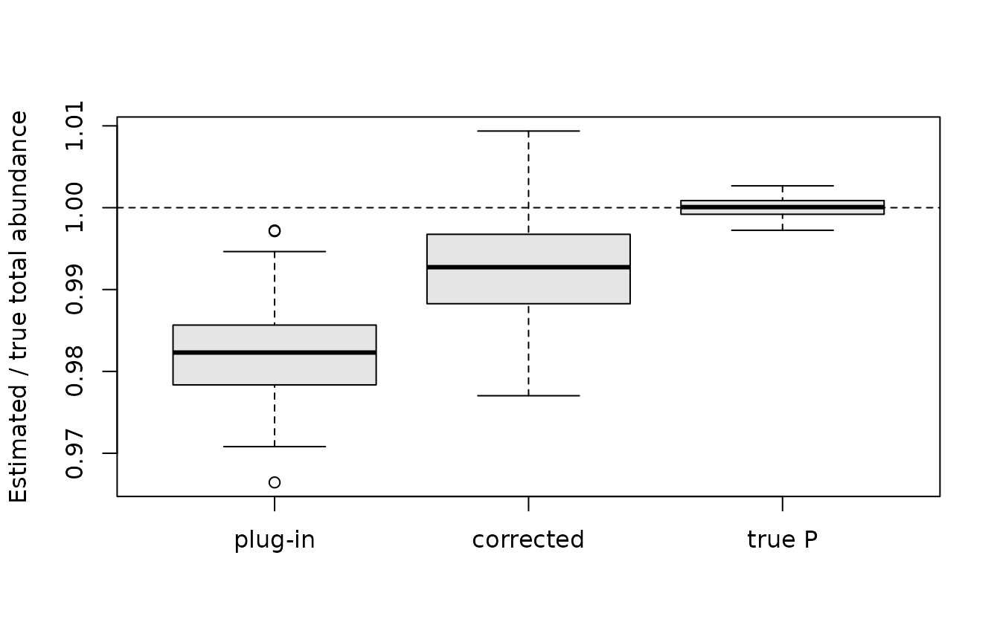

Bias in abundance estimates from random effects models
Source:vignettes/articles/abundance-bias.Rmd
abundance-bias.RmdAbundance is estimated from removal samples as the total catch divided by the cumulative capture probability, \hat N = T / \hat P. When capture probability varies between samples and is modelled with random effects, \hat N is biased downwards, even when the model is correct. This article describes the mechanism, reports a small simulation study, and evaluates a simple correction.
Background
Bias in removal estimates of abundance is well known in fisheries science, but the usual concern is a different mechanism: capture probability that declines over successive passes, typically because easily caught fish are removed first. Removal estimates then overestimate capture probability and underestimate abundance. Riley and Fausch (1992) found that two and three pass removal estimates underestimated trout abundance more than half the time, mostly because of declining capture probability; Peterson et al. (2004) found that removal methods overestimated three pass capture efficiency by 39%; and for juvenile Atlantic salmon, Hedger et al. (2018) found that estimated capture probability declined with successive passes, so that three pass estimates underestimate abundance.
When many sites are sampled, hierarchical models share information
about capture probability between sites, which improves estimates for
sites with little data (Wyatt, 2002; Rivot et al., 2008; Hedger et al.,
2013; Stevens et al., 2020). efp2() does this with random
effects for visits and samples (Millar et al., 2016). This article is
about a consequence of that sharing, which arises even when capture
probability is constant over passes.
The mechanism
The estimate of a random effect is shrunk towards zero, more strongly the less information there is about it. So the estimated capture probabilities of samples are shrunk towards the average: low capture probabilities are overestimated and high ones underestimated. On the logit scale the errors roughly balance, but abundance depends on 1 / P, which is convex. Overestimating a low P reduces \hat N by more than underestimating a high P increases it, so the low capture probability samples dominate and the total is underestimated. This is an instance of Jensen’s inequality: plugging an estimate of P into T / P does not give an unbiased estimate of N, even when T / P is unbiased for the true P.
The estimated standard errors of the random effects describe the
uncertainty about where each capture probability lies, so one correction
is to average 1 / P over that
uncertainty, rather than to plug in the estimate. If \ell = \textrm{logit}(P) is approximately
normal with mean \hat\ell and standard
error s, as given by
capture_prob(), then 1 / P = 1 +
e^{-\ell} and E(1 / P) = 1 +
\exp(-\hat\ell + s^2 / 2), giving the corrected estimate \hat N_c = T\,(1 + \exp(-\hat\ell + s^2 /
2)).
Simulation study
The data were simulated as described in Simulating electrofishing data: 30 sites visited once a year for 15 years, with a sample of fry and a sample of parr on each visit, three passes per sample, and visit and sample random effects on logit capture probability with standard deviations 0.4 and 0.3. Capture probability is lower after the first pass, but is otherwise the same for all fish in a sample, so there is no heterogeneity between individual fish. The number of fish in each sample was simulated from a Poisson distribution.
For each of 100 replicate data sets the model used to simulate the data was fitted,
efp2(count ~ lifestage + pass12 + s(year, k = 6) + s(doy, k = 6) +
s(visitID, bs = "re") + s(fsampleID, bs = "re"),
data = ef_sim, pass = pass, id = sampleID)and the realised abundance of each sample was estimated in three
ways: the plug-in estimate T / \hat P
given by abundance(), the corrected estimate \hat N_c, and, for reference, T / P using the true capture probability. The
code is in bias/bias_study.R on the
bias-correction branch of the repository.
Total abundance
The ratio of the estimated to the true total abundance, over all 100 replicates:
totals <- study[c("total_plugin", "total_lognormal", "total_true_P")]
names(totals) <- c("plug-in", "corrected", "true P")
boxplot(totals, ylab = "Estimated / true total abundance", col = "grey90")
abline(h = 1, lty = 2)
summarise <- function(x) sprintf("%.3f (%.3f)", mean(x), sd(x))
sapply(totals, summarise)
#> plug-in corrected true P
#> "0.982 (0.005)" "0.992 (0.006)" "1.000 (0.001)"With the true capture probabilities the total is unbiased, so all the bias comes from estimating P. The plug-in estimate underestimates the total by 1.8% on average, and was below the truth in 100 of the 100 replicates. The correction removes about half of the bias.
By capture probability
Grouping the samples in each replicate by quartile of their true capture probability shows where the bias comes from:
quartiles <- sapply(c("plugin", "lognormal", "true_P"), function(est) {
sapply(paste0("Q", 1:4, "_", est), function(v) mean(study[[v]]))
})
dimnames(quartiles) <- list(
c("lowest P", "second", "third", "highest P"),
c("plug-in", "corrected", "true P")
)
round(quartiles, 3)
#> plug-in corrected true P
#> lowest P 0.930 0.950 1
#> second 0.999 1.009 1
#> third 1.005 1.011 1
#> highest P 1.004 1.007 1Abundance is underestimated by 7% for the quarter of samples with the lowest capture probability, and slightly overestimated for the rest. The correction reduces the bias for the lowest quartile, but overcorrects for the middle quartiles: averaging over the uncertainty in P allows for the convexity of 1 / P, but not for the shrinkage itself, which moves the centre of that uncertainty.
Shrinkage and coverage
c(
sigma_visit = mean(study$sigma_visit),
sigma_sample = mean(study$sigma_sample),
slope = mean(study$slope),
coverage_plugin = mean(study$coverage_plugin),
coverage_corrected = mean(study$coverage_lognormal)
)
#> sigma_visit sigma_sample slope coverage_plugin
#> 0.3869245 0.2839142 0.8174167 0.9124222
#> coverage_corrected
#> 0.9242000The standard deviations of the random effects are estimated close to their true values of 0.4 and 0.3, so the bias is not caused by poorly estimated variance components. The slope of the regression of estimated on true \textrm{logit}(P) is 0.82, which measures the shrinkage. The 95% confidence intervals for the realised abundance contain the truth 91% of the time, rising to 92% when centred on the corrected estimate.
Discussion
When capture probability varies between samples and is modelled with random effects, the plug-in estimate of abundance is biased downwards, and the bias is concentrated in samples with low capture probability. In this study the bias in the total was about 2%, which is small compared with the biases caused by declining capture probability over passes (Riley and Fausch, 1992; Peterson et al., 2004; Hedger et al., 2018), but it is systematic: it does not decrease as more samples are added, while the standard error of the total does, so the confidence intervals for totals over many samples will tend to miss the truth.
Averaging 1 / P over the uncertainty in the capture probability is simple, and removes about half of the bias in the total, but it is not a complete correction. Possible alternatives are:
- to model abundance and capture probability together, with the number of fish in each sample as a Poisson or negative binomial random variable, as in hierarchical removal models (Wyatt, 2002; Rivot et al., 2008; Stevens et al., 2020). The total catch then contributes information about abundance through the model for N, rather than only through T / \hat P;
- to estimate and remove the bias by parametric bootstrap, which is general but requires refitting the model many times.
The study has limitations: there was no heterogeneity in capture probability between fish within a sample, there were always three passes, and capture probabilities were mostly high (median around 0.9). Bias from shrinkage will be larger when capture probability is lower, or when samples have fewer fish, and it will add to any bias from declining capture probability.
References
Hedger, R. D., de Eyto, E., Dillane, M., Diserud, O. H., Hindar, K., McGinnity, P., Poole, R. and Rogan, G. (2013) Improving abundance estimates from electrofishing removal sampling. Fisheries Research, 137, 104–115. https://doi.org/10.1016/j.fishres.2012.09.015
Hedger, R. D., Diserud, O. H., Sandlund, O. T., Saksgård, L., Ugedal, O. and Bremset, G. (2018) Bias in estimates of electrofishing capture probability of juvenile Atlantic salmon. Fisheries Research, 208, 286–295. https://doi.org/10.1016/j.fishres.2018.08.005
Millar, C. P., Fryer, R. J., Millidine, K. J. and Malcolm, I. A. (2016) Modelling capture probability of Atlantic salmon (Salmo salar) from a diverse national electrofishing dataset: implications for the estimation of abundance. Fisheries Research, 177, 1–12. https://doi.org/10.1016/j.fishres.2016.01.001
Peterson, J. T., Thurow, R. F. and Guzevich, J. W. (2004) An evaluation of multipass electrofishing for estimating the abundance of stream-dwelling salmonids. Transactions of the American Fisheries Society, 133, 462–475. https://doi.org/10.1577/03-044
Riley, S. C. and Fausch, K. D. (1992) Underestimation of trout population size by maximum-likelihood removal estimates in small streams. North American Journal of Fisheries Management, 12, 768–776. https://doi.org/10.1577/1548-8675(1992)012%3C0768:UOTPSB%3E2.3.CO;2
Rivot, E., Prévost, E., Cuzol, A., Baglinière, J.-L. and Parent, E. (2008) Hierarchical Bayesian modelling with habitat and time covariates for estimating riverine fish population size by successive removal method. Canadian Journal of Fisheries and Aquatic Sciences, 65, 117–133. https://doi.org/10.1139/f07-153
Stevens, B. S., Bence, J. R., Luukkonen, D. R. and Porter, W. F. (2020) A hierarchical framework for estimating abundance and population growth from imperfectly observed removals. Ecosphere, 11, e03131. https://doi.org/10.1002/ecs2.3131
Wyatt, R. J. (2002) Estimating riverine fish population size from single- and multiple-pass removal sampling using a hierarchical model. Canadian Journal of Fisheries and Aquatic Sciences, 59, 695–706. https://doi.org/10.1139/f02-041